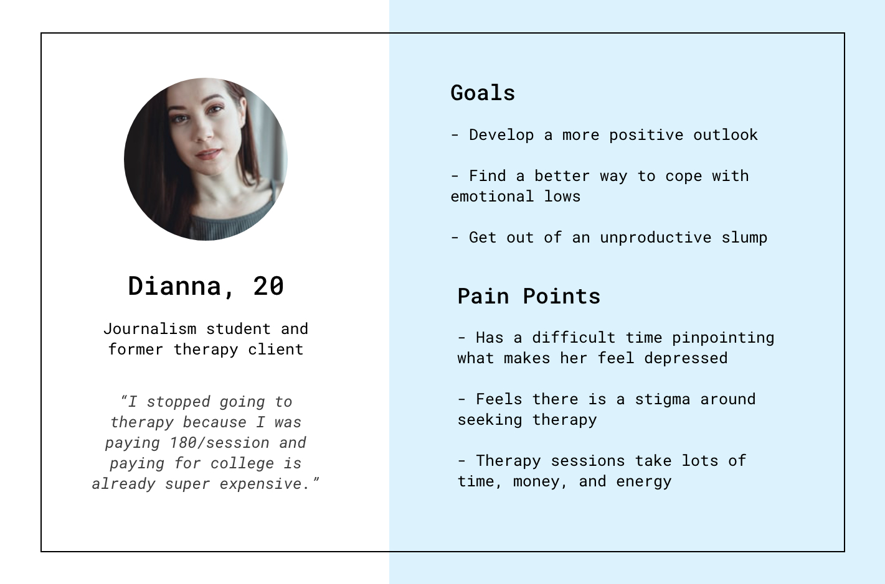
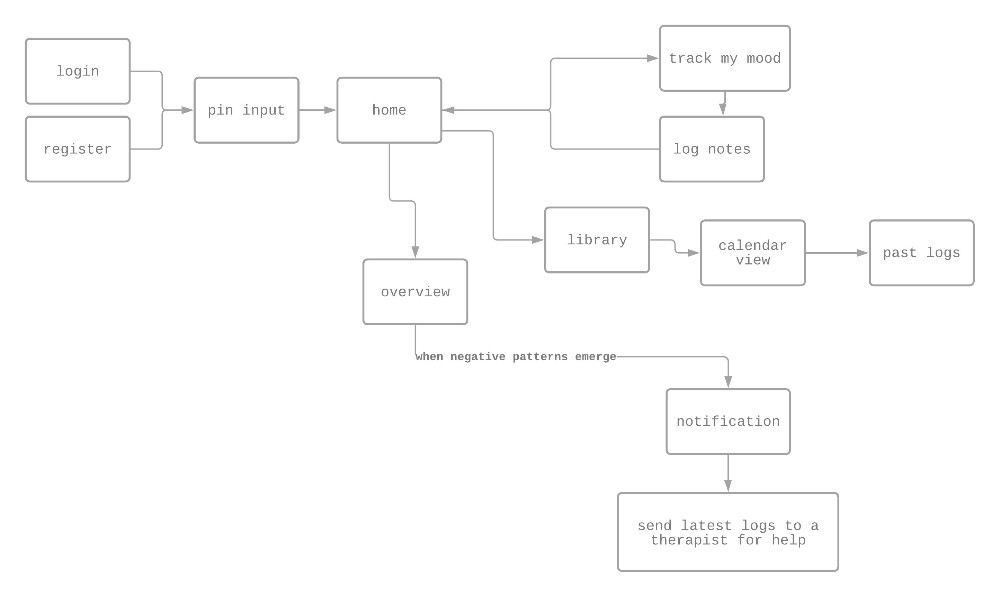

Tools
Adobe Xd
Photoshop
Date
Spring 2019
Role
Solo Designer
& Researcher
01 - Project Brief
Upon entering college, I noticed that many of my peers were normalizing poor mental health. Depression is commonly treated by medication or therapy, but I often heard about how inaccessible therapist consultations were, as well as
gripes about the school's Wellness Center.
02 - Interviews
Due to the delicate nature of the topic, I was only able to conduct 8 in-person interviews. I found that young adults with depression deal with feelings of worthlessness or guilt, often have trouble sleeping, and tend to withdraw from social interactions. Because of social stigma, some interviewees had never been to therapy.
Of those who had experience with therapy, interviewees found it to be a "hit or miss" experience, depending on whether they were comfortable sharing their thoughts with their therapists. Those who were able to go to therapy liked that there was no conflict of interest with their therapist, and that therapy felt like a safe space - without judgement or bias - to be heard. However, they disliked the on-boarding process of a therapy session: it was awkward and uncomfortable because it felt like an interview.
Almost all of the interviewees stated that they found it difficult to share their concerns and problems with family and friends.
03 - Persona
Based on the interviews I conducted, I came up with a persona.

04 - Minimum Viable Product
I decided to focus on designing a more accessible alternative to in-person therapy: a mobile app for mood-tracking, with a minimal onboarding process, focusing on the wide range of emotions other mood-tracking apps fail to address.
05 - Site Map

06 - Low Fidelity Sketches

Rapid paper prototyping
07 - High Fidelity Mockup
I chose to use a circumplex model from the American Psychological Association to allow users to convey their wide range of emotions. The x-axis corresponds to how pleasant/unpleasant they feel, and the y-axis corresponds to energy (activation/deactivation).


The user would indicate their mood on this circumplex daily, and add a note if they felt inclined. This daily data collection would be visualized by color on a calendar, and also on an overall view.
I also checked the color contrast of my text and background to make sure it was compliant with the Web Content Accessibility Guide (WCAG).

 Link to interactive prototype
Link to interactive prototype
Next Steps
I was able to test the prototypes with three of my peers, however, ideally, I'd conduct tests with a wider range and number of users to assess usability. Given more time, I would also love to interview professionals in psychotherapy to refine the app to standard healthcare guidelines.